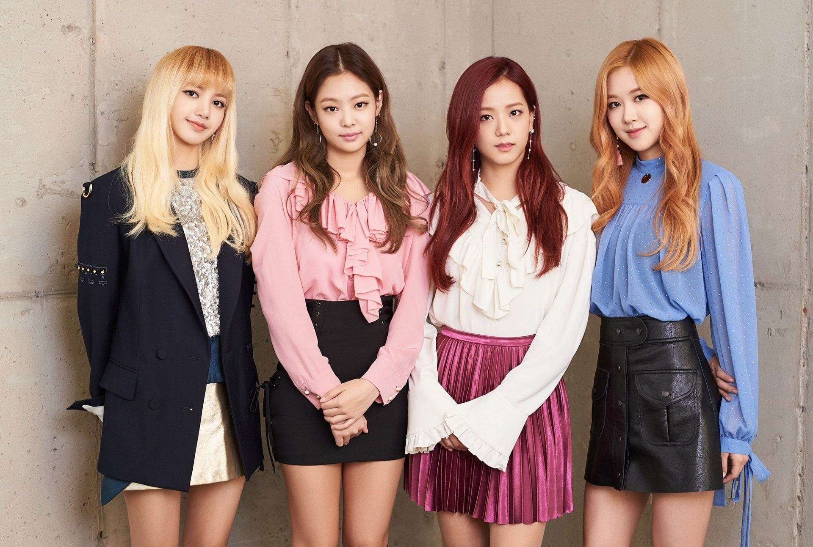

Bu Web saytdan Muzika Tegla olasiz rasim kora olasiz BlackPink Har bir Vedio sini tomosha qila olasiz
BlackPink img

BLACKPINK (koreyscha: 블랙핑크; tarjimasi: QoraPushti) - YG Entertainment tomonidan tashkil topgan Janubiy Koreyalik qizlar guruhi. Guruh a'zolari to'rt kishidan iborat: Jisoo, Jennie, Rosé va Lisa. BLACKPINK 2016-yil avgust oyida debyut qilgan va guruh "Square One" nomli ilk albomini chiqargan. Albomga kiritilgan "Whistle" va "BOOMBAYAH" nomli singllar mos ravishda Gaon Digital Chart (Janubiy Koreya) va 'Billboard World Digital Song Sales (AQSh) chartlarida birinchi pogʻonani egallagan.
Guruhning Selena Gomez bilan hamkorlikda ijro etgan „Ice Cream“ (2020) qoʻshigʻi Billboard Hot 100 chartida 13-pogʻonaga, The Album (2020) nomli albomi esa Billboard 200 chartida ikkinchi pogʻonagacha koʻtarilgan. Ushbu albom umumjahon boʻylab bir milliondan ortiq nusxada sotilib, guruhni buni uddalagan ilk qizlardan iborat koreys guruhiga aylantirgan.[1] Bundan tashqari, guruh qoʻshiqlaridan biri Billboard Emerging Artists chartida birinchi pogʻonaga koʻtarilgan ilk ayollardan iborat guruh hamda qoʻshiqlaridan biri Billboard World Digital Song Sales chartiga kirgan va unda birinchi pogʻonaga koʻtarilgan ilk qizlardan iborat koreys guruhi hisoblanadi.[2] Shuningdek, guruh ijrosidagi „Ddu-Du Ddu-Du“ (2018) qoʻshigʻi Amerika ovoz yozish sanoati assotsiatsiyasi tomonidan oltin sertifikati bilan taqdirlangan va buning ortidan Blackpink ushbu tashkilotdan sertifikat olgan ilk ayollardan iborat koreys guruhga aylangan.[3] Guruhning Dua Lipa bilan hamkorlikda ijro etilgan „Kiss and Make Up“ taronasi Britaniya fonograf sanoati[4] va Avstraliya ovoz yozish sanoati assotsiatsiyasi[5] tomonidan mos ravishda kumush va platina sertifikatlari bilan taqdirlangan hamda buning ortidan guruh ushbu tashkilotlardan sertifikat olgan ilk koreys guruhi boʻlgan.
Blackpink guruhi faoliyati davomida koʻplab rekordlarni oʻrnatgan. Jumladan, guruh ijrosidagi „Kill This Love“ (2019) va „How You Like That“ (2020) taronalari uchun olingan videokliplar YouTube platformasida birinchi 24 soat ichida eng koʻp koʻrilgan klip oʻlaroq rekord oʻrnatgan. Taronalardan ikkinchisi hatto Guinness rekordlar kitobiga ham kirgan.[6] Guruh YouTubeda qoʻshiqlariga olingan besh videoklipi ham bir milliarddan oshiq marta koʻrilgan ilk musiqiy guruh hamda ilk ayollardan iborat koreys guruhi hisoblanadi.[7] Bundan tashqari, Blackpink Spotify platformasida eng koʻp obunachiga ega qizlardan iborat guruh hamdir (2022-yil apreliga koʻra, 29 milliondan oshiq obunachi).[8] Boshqa yutuqlari qatoridan „Yil yangi artisti“ nominatsiyasida Golden Disc Awards va Seoul Music Awards, „Eng yaxshi ayollardan iborat guruh“ nominatsiyasida Mnet Asian Music Award, MTV Music Video Award (bu mukofotni qoʻlga kiritgan ilk koreys guruhi boʻlishgan)[9] va h.k. joy olgan. Shuningdek, guruh Forbes jurnalining 30 Under 30 Asia roʻyxatiga kiritilgan.[10] 2021-yilning yanvarida Janubiy Koreya prezidenti Moon Jae-in Blackpinkni K-popni umumjahon boʻylab yoyganlari uchun taqdirlagan va guruhni global K-pop fenomenoni oʻlaroq eʼtirof etgan.[11]
Konsert va turnelari ==; Turnelar
BLACKPINK ARENA TOUR (2018)
IN YOUR AREA WORLD TOUR (2018-2020)
BLACKPINK WORLD TOUR [BORN PINK] (2022-2023); Konsertlar
BLACKPINK Japan Premium Debut Showcase (2017)
BLACKPINK Livestream Concert: THE SHOW (2021)